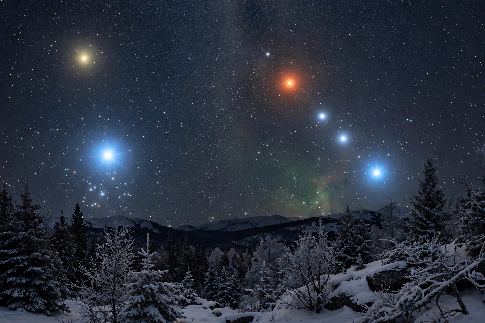

This is a list of the stars arranged by their apparent magnitude — their brightness as observed from Earth — in visible light, measured with a V-band filter. Apparent brightness depends on both intrinsic luminosity and distance, so the list is dominated by nearby stars and luminous supergiants. The Sun, at magnitude −26.74, is by far the brightest object in Earth's sky but is usually excluded from lists of "stars" in the night sky.

| Rank | Star | Constellation | Apparent magnitude | Distance (ly) |
|---|---|---|---|---|
| 1 | Sirius | Canis Major | −1.46 | 8.6 |
| 2 | Canopus | Carina | −0.74 | 310 |
| 3 | Arcturus | Boötes | −0.05 | 37 |
| 4 | Alpha Centauri (A) | Centaurus | −0.27 (combined) | 4.4 |
| 5 | Vega | Lyra | 0.03 | 25 |
| 6 | Capella | Auriga | 0.08 | 43 |
| 7 | Rigel | Orion | 0.13 | 860 |
| 8 | Procyon | Canis Minor | 0.34 | 11.5 |
| 9 | Betelgeuse | Orion | ~0.42 (variable) | ~550 |
| 10 | Achernar | Eridanus | 0.46 | 139 |
| 11 | Hadar | Centaurus | 0.61 | 390 |
| 12 | Altair | Aquila | 0.76 | 17 |
| 13 | Aldebaran | Taurus | 0.86 | 65 |
| 14 | Antares | Scorpius | 0.96 | 550 |
| 15 | Spica | Virgo | 0.97 | 250 |
Several entries are multiple-star systems whose combined light is ranked (Alpha Centauri, Capella). Variable stars such as Betelgeuse change rank over time — during its 2019–20 "great dimming" Betelgeuse faded markedly. The brightest stars are not the most luminous in absolute terms: Deneb, for example, is far more luminous than Sirius but appears fainter because it lies roughly 2,600 light-years away.
From Wikipedia, the free encyclopedia.